Update 2011-04-06 I Finally got around to writing Part 2 of this post.
I had the pleasure this week of presenting at the Australian SharePoint Conference – much kudos to NZ SharePoint MVPs Debbie Ireland and Mark Orange, and local SharePoint MVPs/community folk James Milne, Brendan Law and Kathy Hughes and the team for putting on such a great event.
My session was entitled "Creating and manipulating documents with Word Services and Open XML" and covered the use of the OpenXML SDK and a new feature in SharePoint 2010 (Standard and above) called Word Automation Services. I've uploaded the deck to my SkyDrive, and you can grab it from there.
Disclaimer
I stole a bunch of the code I showed (or at least the concepts for it) from Eric White's excellent blog, several posts from the Word Team and from MSDN:
- Developing with SharePoint 2010 Word Automation Services
- Introducing Word Automation Services
- Word Automation Services: What It Does
- Programming Word Automation Services
- Building Document Generation Systems from Templates using Word 2007 and Word 2010
Development Environment
I ran these demos on a HP Envy 15 with 8 GB of RAM, a Core i7 processor running Windows 7 x64 and with both SharePoint 2010 and Visual Studio 2010 installed.
See the MSDN Article "Setting Up the Development Environment for SharePoint 2010 on Windows Vista, Windows 7, and Windows Server 2008"for information on how to set up your development environment for SharePoint development and then read Beth Massi's notes on that article to actually get it working – "Setting up Windows 7 for Office & SharePoint 2010 Beta Development".
I installed the OpenXML SDK 2.0 – download from here, documentation here.
I also installed the Visual Studio 2010 Pro Power Tools. If you don't have this wonderful set of tools installed on your machine stop reading this now and go and install them. I mean it. Right now!
Demo Code
Set up a Windows Form to call your code from
I built a Winforms app to demonstrate the document creation concepts and if you want to follow along, you can do the same. You know the drill, File|New Project, or just New Project from the VS2010 Start Page
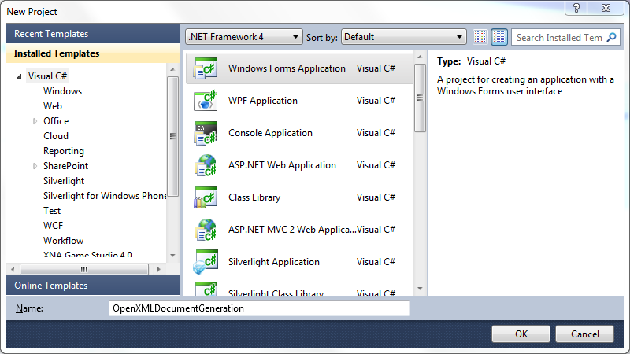
Notice I've used a C# project for this. A later step, reflecting the template document, results in C# code that you'll put into a class in this project so that's why I used C#. I guess you could put the reflected code into a separate class library project and do the rest in VB.NET if you like. I'll leave that as a exercise for the reader.
Drop 4 Buttons and a NumericUpDown on the form and set some properties as follows
| Control | Name | Text |
|---|---|---|
| button1 | CreateOneDocumentLocallyButton | Create One Document Locally |
| button2 | CreateManyDocumentsLocallyButton | Create Many Documents Locally |
| button3 | CreateOneSharePointDocumentButton | Create One Document on SharePoint |
| button4 | CreateManySharePointDocumentsButton | Create Many Documents on SharePoint |
and
| Control | Name | Increment | Maximum | Minimum | Value |
|---|---|---|---|---|---|
| numericUpDown1 | NumberOfDocuments | 100 | 1000 | 0 | 100 |
You should have a form that looks a bit like this:
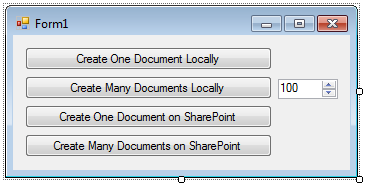
Generate a Document using the OpenXML SDK
Now it's time to actually generate the document using the OpenXML SDK.
The first thing to do is separate your generation code from your UI, so double-click on the CreateOneDocumentLocallyButton button to generate a click event handler and then in the event.
In the Form1 class definition, before the constructor, instantiate a new DocGenerator class (don't worry that you haven't created a class definition yet, you will in a sec):
In the button click event, call the DocGenerator's CreateOneDocumentLocally method and then show a MessageBox to confirm that something's happened. Your form code should look like this:
- using System;
- using System.Collections.Generic;
- using System.ComponentModel;
- using System.Data;
- using System.Drawing;
- using System.Linq;
- using System.Text;
- using System.Windows.Forms;
- namespace OpenXMLDocumentGeneration
- {
- public partial class Form1 : Form
- {
- DocGenerator gen = new DocGenerator();
- public Form1()
- {
- InitializeComponent();
- }
- private void CreateOneDocumentLocallyButton_Click(object sender, EventArgs e)
- {
- gen.CreateOneDocumentLocally();
- MessageBox.Show("Done");
- }
- }
- }
Now it's time for the Visual Studio Magic™. Position your cursor somewhere on the word DocGenerator (in Line 14 above) and press Ctrl+. (that's hold the Control key down and press the full stop, or period button). A Smart Tag will pop up offering to either generate a new class for Doc Generator or a new type.
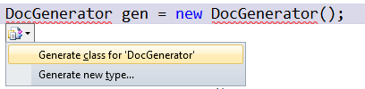
If you choose Generate New Type, you'll get a dialog offering to generate one of four different types, with a number of access options and decisions to be made about where the type definition should be stored:
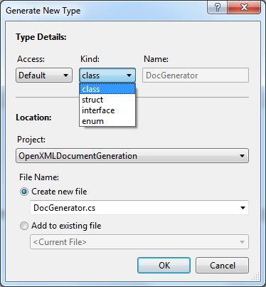
If you choose the default Generate class option though, Visual Studio will generate a new class file with the same name as the class being defined (in this case, DocGenerator) and a class definition for that class in the default namespace.
using System.Collections.Generic;
using System.Linq;
using System.Text;
namespace OpenXMLDocumentGeneration
{
class DocGenerator
{
}
}
This is a great time-saving feature that allows you to work from the inside-out with your creation of types.
The same technique works for defining the methods on the class. Putting the cursor somewhere in the gen.CreateOneDocumentLocally() text (in line 23 above) and pressing Ctrl+. will prompt you to create a method stub for the method you've yet to define.
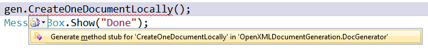
Now you need to add the code that will generate the document.
The first thing to do is add a couple of references to the project. Right-click on your project in the Solution Explorer and choose Add Reference. If you've done what I told you you should above and installed the Visual Studio 2010 Pro Power Tools, you'll get a dialog that looks like this (note that assemblies that are already referenced in the project have a green "check mark" icon next to them):
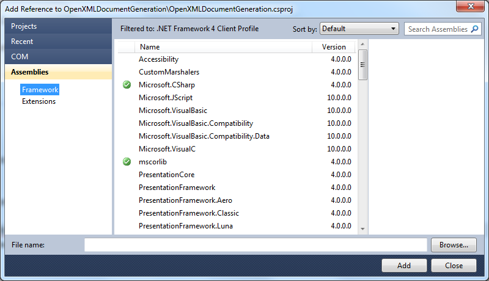
Remember that the OpenXML SDK is a set of wrappers around the System.IO.Packaging namespace, which is in the Windowsbase assembly, so you need to add references to something with OpenXML in the name, and to Windowsbase. Click in the Search Assemblies box in the top-right corner of the dialog and type "OpenXML" (without the quotes). The huge list of assemblies is filtered and just the one you want remains:
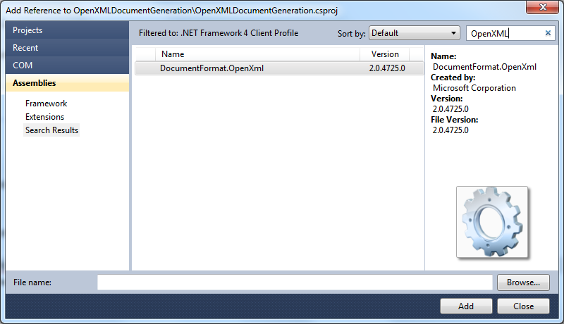
Double-clicking on the assembly in the list adds the reference and the little green icon appears next to it.
Do the same for the Windowsbase assembly.
Now you're going to create your first programmatically-generated OpenXML document.
Switch to the DocGenerator class and add a couple of using directives:
using DocumentFormat.OpenXml.Wordprocessing;
A very common pattern when creating OpenXML documents (and one used by the OpenXML SDK document reflector tool we'll see in a minute) is to create an OpenXML package with a using statement.
In the CreateOneDocumentLocally method, delete the exception line (triple-click to select the entire line) and add the following:
WordprocessingDocument.Create("MyFirstDocument.docx",
DocumentFormat.OpenXml.WordprocessingDocumentType.Document))
{
}
This has now created the outer container, or package (I'll examine some of the overloads of the Create method a bit later). Now you need to add some content to the package.
The first thing to do is add a main document part – this is the bit that holds all of the text for the document. Inside the using statement's braces type
The MainDocumentPart has a document property which holds a reference to a Document class. Create one of those now:
The hierarchy of the Document object looks like this:
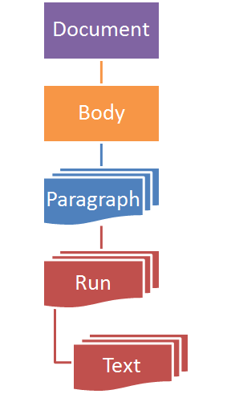
So you'll new up one of each from the top down, and then append them back in the reverse order to build the hierarchy:
Your method should look something like this:
{
using (WordprocessingDocument package =
WordprocessingDocument.Create("MyFirstDocument.docx",
DocumentFormat.OpenXml.WordprocessingDocumentType.Document))
{
package.AddMainDocumentPart();
// instantiate the members of the hierarchy
Document doc = new Document();
Body body = new Body();
Paragraph para = new Paragraph();
Run run = new Run();
Text text = new Text() { Text = "The OpenXML SDK rocks!" };
// put the hierarchy together
run.Append(text);
para.Append(run);
body.Append(para);
doc.Append(body);
// Assign the document object to the MainDocumentPart's Document property
package.MainDocumentPart.Document = doc;
}
}
Moment of truth time – run the project and click the Create One Document Locally button. You should be rewarded with a MessageBox saying "Done".
Close the form.
Right-click on the project in Solution Explorer and choose "Open Folder in Windows Explorer".
Navigate down into Bin/Debug.
Double-click on MyFirstDocument.docx to open it in Word. With any luck, you should have something like this:
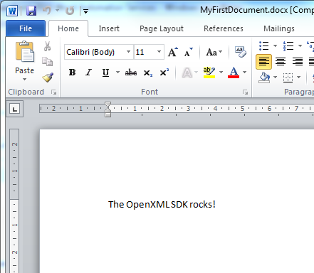
Document Reflection Using the OpenXML SDK 2.0 Productivity Tool
You'll have noticed that it still seemed to take a lot of code just to create a single sentence in a plain, un-themed document (although, I assure you, it's a lot less than you'd need to use if you called System.IO.Packaging directly). Fortunately, the OpenXML SDK ships with an all-purpose, Swiss Army Knife of a tool called the OpenXML SDK 2.0 Productivity Tool for Microsoft Office (I'm going to call it the OSDKT from now on). If you installed the SDK in the default location, the tool lives at C:\Program Files (x86)\Open XML SDK\V2.0\tool\OpenXmlSdkTool.exe. Take a moment now to fire it up. When it starts, it look like this:
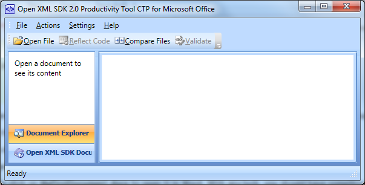
It's definitely worth checking out the documentation of this multi-purpose tool, but for now you'll just be using what I think is the most powerful feature, the Document Reflector. The Document reflector examines an OpenXML document and generates the code required to create the document programmatically. This means that you can start with a complex, beautifully themed document as a template, generate the code for that document and then adapt the code to include whatever makes sense (data from a database, web data, calculated information and so on).
To reflect a document, click the Open File button in the OSDKT's toolbar and choose any OpenXML document. In this case, choose a Word document that doesn't support templates (usually with the extension docx). If you don't have one handy, I've uploaded one here for you to use.
Notice that the hierarchy of the document is represented in the left side of the tool. In this screenshot I've expanded the hierarchy to show the MainDocumentPart, the Document, the Body, a Paragraph, a Run and a Text class.
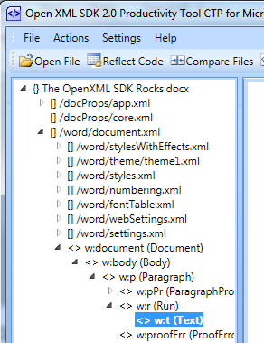
Note that there are lots of other nodes in the hierarchy that you didn't add in the first, hand-coded example you tried above.
Now it's time to generate the code to create this document. Select the root node of the hierarchy in the left pane of the OSDKT and then click the Reflect Code button. After a few moments, the right pane fills up with what's known in the business as a shedload of code.
Click somewhere in that code and then press Ctrl+A and then Ctrl+C to copy it all to the clipboard.
Switch back to Visual Studio.
Right-click on the project in the Solution Explorer and choose Add Class.
Call the class DocumentCreator.
Press Ctrl-A and Ctrl-V to replace the default code for the class with the code you copied from the OSDKT
Change the NameSpace to OpenXMLDocumentGeneration and the class name to DocumentCreator. Your class definition should look something like this:
using Ap = DocumentFormat.OpenXml.ExtendedProperties;
using Vt = DocumentFormat.OpenXml.VariantTypes;
using DocumentFormat.OpenXml;
using DocumentFormat.OpenXml.Wordprocessing;
using A = DocumentFormat.OpenXml.Drawing;
using M = DocumentFormat.OpenXml.Math;
using Ovml = DocumentFormat.OpenXml.Vml.Office;
using V = DocumentFormat.OpenXml.Vml;
using W14 = DocumentFormat.OpenXml.Office2010.Word;
namespace OpenXMLDocumentGeneration
{
public class DocumentCreator
{
// Creates a WordprocessingDocument.
public void CreatePackage(string filePath)
{
using (WordprocessingDocument package =
WordprocessingDocument.Create(filePath,
WordprocessingDocumentType.Document))
{
CreateParts(package);
}
}
Now all that needs to happen is to create and call this class instead of our hand-crafted code.
In the DocGenerator class, add a field to hold a reference to an instance of our new DocumentCreator class as well as a base folder for output:
Next, replace the contents of the CreateOneDocumentLocally method with a call to the DocumentCreator's CreatePackage method:
Now remove the using directives that reference the OpenXML SDK namespaces as you don't need them in this class any more. The class should now look like this:
using System.Collections.Generic;
using System.Linq;
using System.Text;
using DocumentFormat.OpenXml.Packaging;
using DocumentFormat.OpenXml.Wordprocessing;
namespace OpenXMLDocumentGeneration
{
class DocGenerator
{
DocumentCreator gen = new DocumentCreator();
string OutputFolder = @"c:\temp\";
internal void CreateOneDocumentLocally()
{
gen.CreatePackage(OutputFolder + "MyNextOpenXMLDocument.docx");
}
}
}
The last thing you'll do is add some code to time the creation of the document (so you can compare the different method calls later). In the Form1 code, instantiate a Stopwatch class and assign it to a field called sw then add code to reset and start the stopwatch before the document is created and to stop it and report the results when the method returns. Form1.cs should now look like this:
using System.Collections.Generic;
using System.ComponentModel;
using System.Data;
using System.Drawing;
using System.Linq;
using System.Text;
using System.Windows.Forms;
using System.Diagnostics;
namespace OpenXMLDocumentGeneration
{
public partial class Form1 : Form
{
DocGenerator gen = new DocGenerator();
Stopwatch sw = new Stopwatch();
public Form1()
{
InitializeComponent();
}
private void CreateOneDocumentLocallyButton_Click(object sender, EventArgs e)
{
sw.Reset();
sw.Start();
gen.CreateOneDocumentLocally();
sw.Stop();
MessageBox.Show(String.Format("Created one document locally in {0} ms",
sw.ElapsedMilliseconds));
}
}
}
Run this project up and click the Create One Document Locally button. In my case, this resulted in a MessageBox like this:
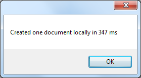
Clicking it a couple more times gave interesting results:
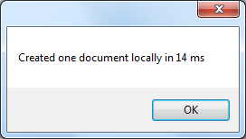 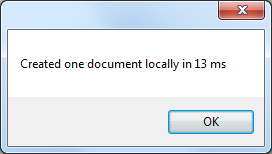
Showing that time to actually create a document is pretty small – most of the time in the first instance is in instantiating the document creation classes.
To show this even more vividly, add an event handler to the CreateManyDocumentsLocallyButton's click event that passes the value of the NumberOfDocs numericUpDown control to a method:
{
sw.Reset();
sw.Start();
gen.CreateManyDocumentsLocally((int)NumberOfDocuments.Value);
sw.Stop();
MessageBox.Show(String.Format("Created {1} documents locally in {0} ms",
sw.ElapsedMilliseconds, (int)NumberOfDocuments.Value));
}
CreateManyDocumentsLocally just loops through and creates that may documents:
{
for (int i = 0; i < NumberOfDocs; i++)
{
gen.CreatePackage(string.Format("{0}MyNextOpenXMLDocument{1:D5}.docx",
OutputFolder, i));
}
}
Running this with 100 documents gave me this:
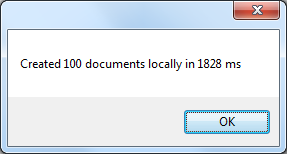
and with 1000 documents
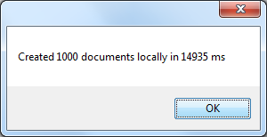
Finally, try using the new Parallel Task Library:
{
System.Threading.Tasks.Parallel.For(0, NumberOfDocs, i =>
{
gen.CreatePackage(string.Format("{0}MyNextOpenXMLDocument{1:D5}.docx",
OutputFolder, i));
});
}
and update the Form1 code that calls it to look like:
{
sw.Reset();
sw.Start();
gen.CreateManyDocumentsLocallyInParallel((int)NumberOfDocuments.Value);
sw.Stop();
MessageBox.Show(String.Format("Created {1} documents locally with Parallel Processing in {0} ms",
sw.ElapsedMilliseconds, (int)NumberOfDocuments.Value));
}
Calls to 100 and 1000 documents with Parallel processing on my quad core box only gave me about a 50% increase in performance:
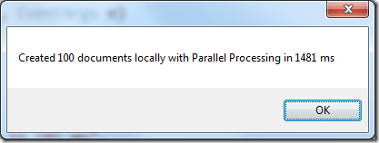 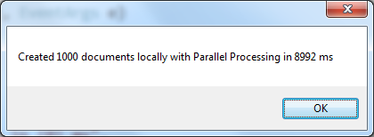
{kind=link}
Tune in next time
This concludes Part 1. In Part 2, I'll explore writing the documents to a SharePoint library instead of to a local file system and then converting the documents from docx to pdf files with no user intervention at all!
Additional Resources
Download the SharePoint 2010 Developer Training Kit